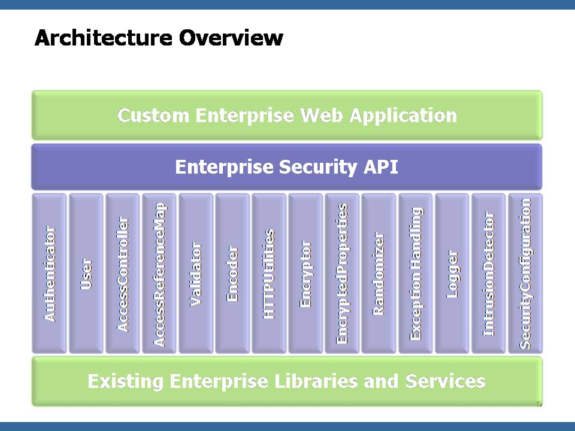
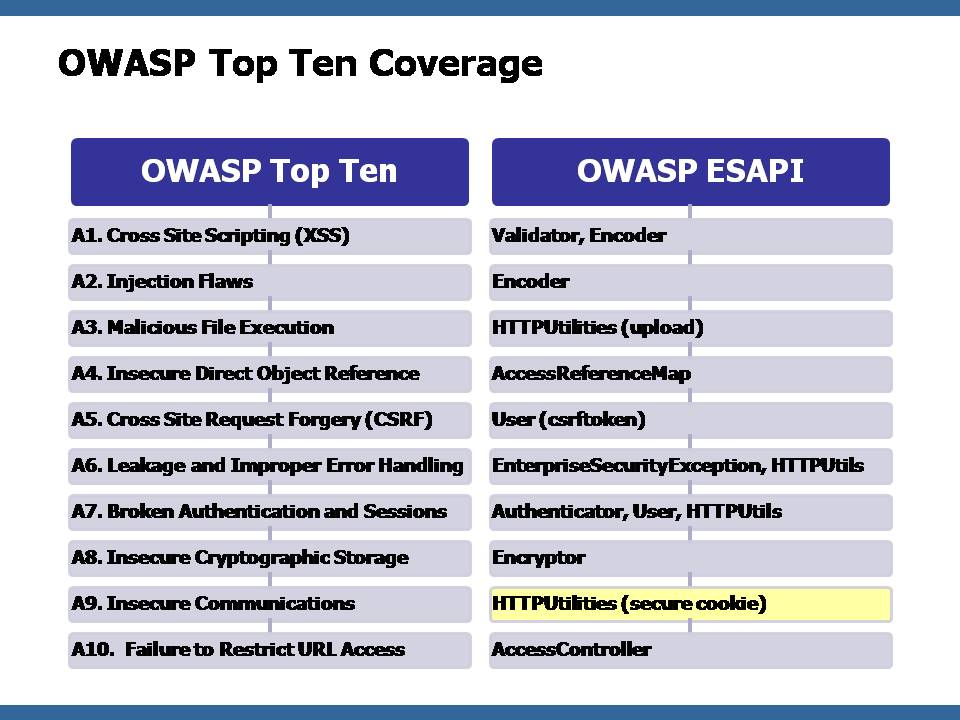

Exception classes model the most
important security functions to enterprise web applications.See: Description
| Interface | Description |
|---|---|
| AccessController |
The AccessController interface defines a set of methods that can be used in a wide variety of applications to
enforce access control.
|
| AccessControlRule<P,R> | |
| AccessReferenceMap<K> |
The AccessReferenceMap interface is used to map from a set of internal
direct object references to a set of indirect references that are safe to
disclose publicly.
|
| Authenticator |
The Authenticator interface defines a set of methods for generating and
handling account credentials and session identifiers.
|
| Encoder |
The Encoder interface contains a number of methods for decoding input and encoding output
so that it will be safe for a variety of interpreters.
|
| EncryptedProperties |
The
EncryptedProperties interface represents a properties file
where all the data is encrypted before it is added, and decrypted when it
retrieved. |
| Encryptor |
The Encryptor interface provides a set of methods for performing common
encryption, random number, and hashing operations.
|
| Executor |
The Executor interface is used to run an OS command with reduced security risk.
|
| HTTPUtilities |
The HTTPUtilities interface is a collection of methods that provide additional security related to HTTP requests,
responses, sessions, cookies, headers, and logging.
|
| IntrusionDetector |
The IntrusionDetector interface is intended to track security relevant events and identify attack behavior.
|
| LogFactory |
The LogFactory interface is intended to allow substitution of various logging packages, while providing
a common interface to access them.
|
| Logger |
The Logger interface defines a set of methods that can be used to log
security events.
|
| Randomizer |
The Randomizer interface defines a set of methods for creating
cryptographically random numbers and strings.
|
| SecurityConfiguration |
The
SecurityConfiguration interface stores all configuration information
that directs the behavior of the ESAPI implementation. |
| User |
The User interface represents an application user or user account.
|
| ValidationRule | |
| Validator |
The Validator interface defines a set of methods for canonicalizing and
validating untrusted input.
|
| Class | Description |
|---|---|
| EncoderConstants |
Common character classes used for input validation, output encoding, verifying password strength
CSRF token generation, generating salts, etc
|
| ESAPI |
ESAPI locator class is provided to make it easy to gain access to the current ESAPI classes in use.
|
| ExecuteResult |
The ExecuteResult class encapsulates the pieces of data that can be returned
from a process executed by the Executor interface.
|
| Logger.EventType |
Defines the type of log event that is being generated.
|
| PreparedString |
A parameterized string that uses escaping to make untrusted data safe before combining it with
a command or query intended for use in an interpreter.
|
| SafeFile |
Extension to java.io.File to prevent against null byte injections and
other unforeseen problems resulting from unprintable characters
causing problems in path lookups.
|
| SecurityConfiguration.Threshold |
Models a simple threshold as a count and an interval, along with a set of actions to take if
the threshold is exceeded.
|
| StringUtilities |
String utilities used in various filters.
|
| ValidationErrorList |
The ValidationErrorList class defines a well-formed collection of
ValidationExceptions so that groups of validation functions can be
called in a non-blocking fashion.
|
Exception classes model the most
important security functions to enterprise web applications.
The interfaces in this package are intended to be extended and
customized within an enterprise to match their custom data,
security services, and application environment. A reference
implementation of this interface is provided as an example of how this
library can be implemented successfully, but is useful in many ways
by itself as well.
OWASP ESAPI interfaces and reference implementation provides enterprise web application developers with the most important security functions they need in ordre to build secure web applications and web services that stand up to most common-day web-based attacks.
The The Open Web Application Security Project (OWASP) is a worldwide free and open community focused on improving the security of application software. Our mission is to make application security "visible," so that people and organizations can make informed decisions about application security risks. Everyone is free to participate in OWASP and all of our materials are available under an open source license. The OWASP Foundation is a 501c3 not-for-profit charitable organization that ensures the ongoing availability and support for our work.
The OWASP ESAPI Project is led by Jeff Williams, Aspect Security.
You can find more information about the ESAPI Java project, or join the mailing list and help us make it better from the OWASP project page at http://www.owasp.org/index.php/ESAPI#tab=Java_EE.
The ESAPI class library builds on the excellent security libraries available, such as Java Logging, JCE, and Adobe Commons FileUpload. It uses the concepts from many of the security packages out there, such as ACEGI, Apache Commons Validator, Microsoft's AntiXSS library, and many many more. This library provides a single consistent interface to security functions that is intuitive for enterprise developers.
Used properly, the ESAPI provides enough functions to protect against most of the OWASP Top Ten. The only real exception is the Insecure Communications category, which is generally outside the control of the software developer.
This project and all associated code is Copyright (c) 2007 - The OWASP Foundation
This project licensed under the BSD license, which is very permissive and about as close to public domain as is possible. You can use or modify ESAPI however you want, even include it in commercial products.
Copyright © 2016 The Open Web Application Security Project (OWASP). All rights reserved.